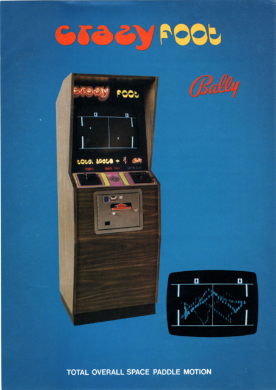
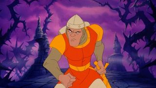
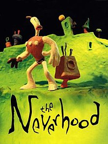

Game Portal
История видеоигр


История видеоигр
— Порою я не понимаю о чём он говорит. Дети в наш век развитых технологий...
— Сдохни! Сдохни! Сдохни! (играет в видеоигру)
— ... остаются детьми совсем недолго.
Чарли и шоколадная фабрика (Charlie and the Chocolate Factory)
Spacewar! (1961) — первая в истории видеоигра, доступная широкой аудитории. Spacewar! предназначалась для двух игроков. Они должны были управлять космическими кораблями и пытаться уничтожить друг друга. При этом игрокам нужно уворачиваться от астероидов, зарабатывать очки и избегать звезды в центре экрана — она поглощала корабли при столкновении.
Прадедушка джойстиков появился ещё в начале XX века: в 1907 году французский лётчик Робер Эсно-Пельтри запатентовал рукоять управления самолетом: точность управления выросла, — и следующих контроллерах появились функции, измеряющие силу нажатия.
Первой игрой для аркадного автомата стала Pong (1972). Это был симулятор настольного тенниса на консольной игровой системе, похожей на телевизор, — с него началась золотая эпоха аркадных игр. В год выпуска компания Atari продала более 800 автоматов Pong: после успеха Pong по всему миру стали открывать залы аркадных автоматов, а игры вошли в массовую культуру.

Самый первый киберспортивный турнир состоялся в 1972 году, когда 24 студента Стэнфордского университета решили посоревноваться в игре Spacewar за подписку на журнал Rolling Stone. С того времени в киберспорте многое поменялось: в последние годы не раз рассматривался вопрос о включении киберспорта в программу Олимпийских игр, возросло количество участников и ценность приза — чего только стоит The International 2019 с призовым фондом в 34 миллиона долларов.
Pac-Man (с англ. — «Па́кман») — аркадная видеоигра, разработанная японской компанией Namco и вышедшая в 1980 году. Задача игрока — управляя Пакманом, съесть все точки в лабиринте, избегая встречи с привидениями, которые гоняются за героем. С повышением уровня игры изменяется только её сложность, архитектура лабиринта остаётся идентичной. Всего в игре 256 уровней, последний из которых невозможно завершить из-за ошибки переполнения. Первой игрой с кат-сценамии стал Pac-Man (1980): сцены прерывали игровой процесс и показывали видео с развитием сюжета — это были скетчи о том, как Пакман и привидение Блинки гоняются друг за другом.
Благодаря популярности игра портировалась и переиздавалась на множество платформ, среди которых особую известность получила версия Pac-Man для Atari 2600. Из-за своего плохого качества она стала одним из символов кризиса видеоигр 1983 года. Pac-Man дала начало одноимённой серии игр, в которой вышло множество продолжений на различных платформах, включая аркадные автоматы, домашние игровые системы, компьютеры и мобильные телефоны. Помимо этого, вышло множество клонов, подражаний и нелегальных копий игры.
Первой игрой с рейтингом 18+ считается Dracula (1986) от CRL Group: издатели осознанно хотели получить сертификат 18+ и решили, что ажиотаж вокруг «первой взрослой игры» поднимет продажи продукта.
Игра Dragon’s Lair (1983) зародила жанр Quick Time Events. QTE представляет динамичные сцены, во время которых игрок должен быстро нажимать на всплывающие на экране клавиши, в данном случае, управляя рыцарем, пришедшим в замок спасти похищенную драконом принцессу. Графика в Dragon’s Lair была неотличима от высокобюджетного мультфильма студии Disney: всю анимацию, локации и персонажей создал Дон Блут, художник и режиссер таких картин как «Анастасия», «Все псы попадают в рай» и «Земля до начала времён».
The Neverhood (1996) стала первой игрой, полностью выполненной в пластилиновой анимации. Идея странной пластилиновой вселенной появилась у Дугласа еще в 1988 году, а в 1995 году он обратился за помощью к Стивену Спилбергу и его студии DreamWorks Interactive. на разработку игры ушло примерно три тонны пластилина: его разогревали на плитах в огромных кюветах, а затем размазывали по гипсокартону. На одну секунду анимации приходилось по 15 кадров, а приготовления к одному кадру могли длиться часами. До The Neverhood пластилиновую анимацию частично использовали только в Doom (1993) — часть монстров и оружия из игры сделали из пластилина, латекса и металла.
В Советском Союзе первыми приставками фабричного производства были Палестра 02, Турнир и Экси Видео 01: на них можно было поиграть в теннис, мини-футбол, сквош. Приставки выпускались с 1978 года: внешне они отличались, но объединяло их то, что они были клонами консоли Atari Pong и попадали в руки только к избранным, ведь стоили от 100 рублей. В разы доступнее оказались портативные игровые консоли из серии «Электроника» (1984). Самая известная из них — та сама «Ну, погоди», где волк ловил куриные яйца. Правда идею игры, как и её реализацию, украли у японской компании Nintendo. По легенде, их игры серии Game&Watch в Россию привезли агенты КГБ, а инженеры из конструкторского бюро разобрали игру по винтикам, изучили и наладили производство отечественного аналога.
Когда все трехмерные игры состояли исключительно из полигонов, вышедшая в 1994 году игра
Ecstatica
первой использовала эллипсоиды в моделировании: все локации, как и персонажи, состояли из сфер
разных форм. Так разработчики экономили оперативную память и пытались сделать графику плавнее:
хоть
техника и не прижилась, на тот момент она казалась революционной.
Действие игры происходит в северной Европе в 928 году. Путешественник, главный герой игры,
заезжает в вымышленный городок Тирих (Tirich), чтобы пополнить запасы питья. Он обнаруживает,
что город захвачен демонами. Пообщавшись с местными жителями, герой узнаёт, что демонов вызвала
молодая девушка по имени Экстатика (в игре её имя не упоминается — оно есть только в официальном
описании). Она украла волшебную книгу у местного колдуна и решила поэкспериментировать. Из-за
своей неопытности девушка не смогла совладать с большим демоном, и тот завладел её сознанием, а
его мелкие собратья начали терроризировать городок. Чтобы помочь жителям и снять проклятие,
герой должен уничтожить демона и освободить от одержимости Экстатику.

Уилл Райт — первый разработчик и геймдизайнер, удостоенный премии BAFTA. Он получил её за
разработку игры The Sims, первого симулятора жизни, в 2000 году. Идея игры пришла к Райту ещё в
1991-м, когда сгорел его дом: он задумался о том, чтобы придумать игру, в которой каждый человек
мог бы воссоздать своё уютное гнездышко таким, каким хочет его видеть. Разработчика интересовали
человеческие эмоции и тяга к созиданию: он хотел продумать игровой процесс так, чтобы
пользователи смогли почувствовать себя богами в собственных вселенных.
Чтобы не заморачиваться c локализацией, для игры придумали свой язык — симлиш: Райт
пригласил для озвучки актёров-импровизаторов и попросил их сочинять реплики персонажей
на ходу. К The Sims сразу же пришёл коммерческий успех: в 2002 году игра возглавляла
топы продаж, а к 2005-му компания EA-Games продала 16 миллионов оригинальных копий.
Karateka(1984) и Prince of Persia(1989) были первыми играми, нарисованными с использованием технологии захвата движения, известной как ротоскопирование. Пионером ротоскопирования в игровой индустрии стал геймдизайнер Джордан Мехнер, который узнал о нём на курсах по кинематографическому искусству. С помощью технологии можно было создать высококачественную реалистичную анимацию. Первой пробой ротоскопирования для Мехнера послужила игра о боевых искусствах Karateka, в создании которой геймдизайнеру помогал его инструктор, выступивший в роли модели. Но главной работой Мехнера считается игра Prince of Persia. Для неё Джордан задействовал своего брата, Дэвида, с которым записал несколько десятков часов видеоматериалов. Дэвиду приходилось бегать, прыгать, махать палкой вместо меча, падать из разных положений и изображать различные виды смерти. Для сложно поставленных схваток разработчик взял в основу фрагменты из киноленты «Приключения Робин Гуда» 1938 года.
К девяностым игры уже вошли в повседневность многих людей, став неотделимой частью массовой культуры. Процесс геймификации привел к феномену виртуальных питомцев и появлению на рынке всем известных тамагочи. Эти портативные цифровые питомцы, детище Аки Майты и Ёкои Акихиро из компании Bandai, стали воплощением мечты каждого ребенка — их игрушки волшебным образом оживали. Существуя в режиме реального времени, они нуждались в постоянном внимании: их надо было кормить, убираться за ними и лечить их, когда они болели. Если же вы как следует не следили за тамагочи и пренебрегали их потребностями — они умирали. Раньше, если ваш персонаж погибал в игре, всегда можно было попробовать снова, но только не здесь: жизнь каждого Тамагочи была конечна и вызывала сильную эмоциональную привязку — питомец мог умереть меньше, чем за полдня. На фоне подобного опыта даже возник термин «эффект Тамагочи», объясняющий любые эмоциональные затруднения, которые мы испытываем с машинами, роботами или любыми виртуальными объектами. Стало ясно: люди могут формировать эмоциональную привязанность практически ко всему. Тамагочи стали настолько популярны, что появились их аналоги: Digimon, Gigapet, отдельная игра для консоли — Nintendogs, а в дальнейшем мода привела и вовсе к пушистым роботам-игрушкам Ферби. С момента выпуска в 1996 году во всем мире купили более 82 миллионов Тамагочи.
Проявление эффекта Манделы в видеоиграх — слух о необычном поведении Махатмы Ганди в Civilization. Известный своей философией ненасилия, индийский политик в игре при определенном сценарии начинает вести себя максимально агрессивно на мировой арене. Распространение этого слуха началось с пятой части: там у Индии предпочтение ядерного оружия другим формам ведения внешней политики оказалось на значении, близком к максимальному. Разработчики добавили такую особенность лишь ради шутки и возможной абсурдности происходящего. История продолжилась, когда на тематических форумах по игре распространились сообщения о баге, якобы идущем еще из первой Civilization и вызывающем повышенную агрессию Ганди. Любого сомневающегося сразу отправляли на сайт TVTropes — там находилась та самая статья, подтверждающая реальность бага, но не имеющая этому доказательств. Даже когда Сид Мейер, главный геймдизайнер и отец всей серии, всегда опровергавший миф в различных интервью, провёл исчерпывающее расследование в собственной книге и доказал выдумку бага, — это не заставило разувериться в знаменитом мифе даже ветеранов серии, заставших первую часть (1991).